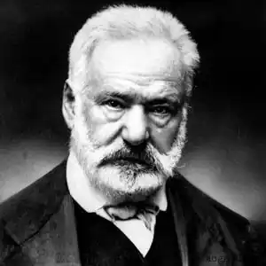
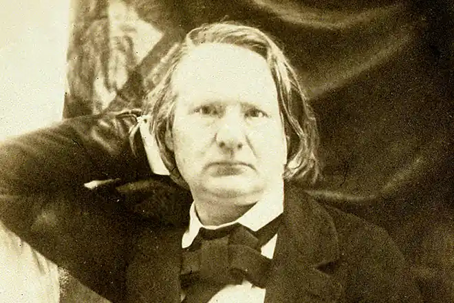

ВІКТОР ГЮГО
(1802-1885)
Французьку літературу XIX століття неможливо уявити без Віктора Гюго. Творчість Гюго, найвидатнішого французького романтика, вождя французького романтизму, його теоретика, вражаюче багатогранна й розмаїта: він великий поет, прозаїк, драматург, до того ж літературний критик і бойовий, темпераментний публіцист. Віктор Гюго народився 26 лютого 1802 року в Безансоні. Батько Гюго, котрий народився в сім'ї майстра столярного цеху, за часів Наполеона став генералом. Мати письменника, навпаки, ненавиділа Наполеона й була роялісткою. Сім'я Гюго часто переїжджала, деякий час вони жили в Іспанії. Після падіння Наполеона, перебуваючи в Мадриді, де батько був губернатором, сім'я розпалася. Віктора виховувала мати. У Гюго рано пробуджується поетичний талант. Ще підлітком він починає писати, і вже в 1815-1816 роках його оди та поеми відзначаються на конкурсах Тулузької академії, а згодом і королівським урядом. Свою першу поетичну збірку "Оди й різні вірші" (1822) він написав у стилі класицизму. Щодо класицизму Гюго, то він виявився дуже нестійким. Тільки-но молодий поет виходить із стадії шкільного наслідування, починається поступовий, спершу несміливий, а потім усе рішучіший перехід на романтичні позиції. Але в прозових жанрах Гюго завжди стояв на позиціях романтизму. Свідченням того є перший роман Гюго "Ган Ісландець" (1821-— 1822). Свідченням подальшого утвердження Гюго на позиціях романтизму був його другий роман "Бюг Жаргаль" (1826). У цьому романі Гюго звернувся до змалювання повстання негрів-рабів. У галузі поетичного стилю реформа Гюго визначилась у намаганні замінити раціоналістичний вірш класицизму мовою людських почуттів. Він відмовляється від прикрас, запозичених з античної міфології. У цей же період Гюго звертається до балади, яка вважалася жанром романтичним і привертала тоді загальну увагу. У 1826 році виходить його збірка "Оди і балади", сама назва якої промовисто засвідчує її перехідний характер: тут оди, взірцевий жанр класичної поезії, об'єднані з баладами характерним представником романтичної поезії. Наприкінці 20-х років романтики надають особливої ваги завоюванню театру, який все ще лишався під владою класицизму. З цією метою 1827 року Гюго пише свою першу романтичну історичну драму "Кромвель", котра розповідає про англійську буржуазну революцію XVII століття. її вождь Кромвель був зображений як сильна особистість, але, на відміну від цільних героїв класицизму, він зазнає моральних протиріч: скинувши короля, він ладен зрадити революцію і стати монархом. Великого розголосу набула передмова до драми, в ній Гюго прагнув пов'язати розвиток літератури з розвитком історії людства, щоб показати історичну обумовленість торжества романтизму. Це була цілісна програма романтичного руху. Також небувалої інтенсивності досягає багатогранна творча діяльність Гюго. Особливо значним явищем стала його збірка "Орієнталії" (1829) — перша завершена романтична збірка поезій, яка й створює Гюго репутацію великого поета. Для художньої творчості Гюго характерна рідкісна жанрова розмаїтість: з однаковим успіхом виступав він у поезії, прозі й драматургії. Та передусім він був поетом. Ідейний зміст драм Гюго не сходить до самої проблематики, що пов'язана з ідеологічними битвами кінця 20-х років та Липневою революцією 1830 року. Романтичні драми Гюго перегукувалися з актуальними соціально-політичними проблемами сучасності, відстоювали її передові ідеали та устремління. В основу кожної із драм Гюго 1829-1839 років, за винятком "Лукреції Борджа" (1833), покладений конфлікт простолюдинів, представників третього стану з феодальною аристократією та монархією ("Маріон Делорм", "Король розважається", 1832, "Марія Тодор", 1833, "Рюі Блаз", 1838) та інші. В історії французької літератури друга половина 20-х років позначена розквітом жанру історичного роману. Одним із найвищих досягнень французького історичного роману доби романтизму є роман Гюго "Собор Паризької Богоматері" (1831). Цей роман відбиває національну історію, він пов'язаний з актуальною сучасною проблематикою. Кінець 20-х і 30-х років належить, поряд із двома десятиліттями вигнання (1851 —1870), до періодів творчої активності, незвичайної навіть для Гюго, У ці роки він зводив будову романтичної драматургії та театру, активно виступав у прозових жанрах, але разом з тим, не послаблялася й інтенсивність його поетичної творчості. У 30-ті й на початку 40-х років з'являються чотири його поетичні збірки — "Осіннє листя" (1836), "Пісні сутінок" (1837), "Внутрішні голоси" та "Промені й тіні" (1841). Крім того, багато поезій ввійшли до "Споглядань" — величезної двотомної збірки, опублікованої вже в період вигнання (1856). Після Лютневої революції 1848 року та встановлення диктатури Луї Бонапартом Гюго залишає Францію і їде у вигнання. Він поселяється на острові в протоці Ла-Манш. З метою викрити і знеславити перед усім світом політичного авантюриста та його злочинний режим і тим самим сприяти їхньому скорому падінню в перший рік еміграції Гюго пише дві книги: "Наполеон Маленький" та "Історію одного злочину" — своєрідну викривальну хроніку перебігу подій під час державного перевороту 1851 року. Саме в період вигнання завершується формування світогляду письменника. У перші роки вигнання, на острівці Джерсі, Віктор Гюго створює збірку "Карт" (1853), яка справедливо вважається вершиною його політичної поезії. На перший погляд, збірка справляє враження калейдоскопа реальних сценок і гротескно-карикатурних портретів, але є в ній чітко прокреслені смислові лінії і поля незвичайно високої емоційної напруги, котрі всьому цьому різнорідному матеріалові надають певної впорядкованості й завершеності. Активно виступав Гюго під час вигнання також у прозових жанрах. У цей період з'явилося три романи: "Знедолені" (1862), "Трудівники моря" (1866) і "Людина, яка сміється" (1869). В усіх цих романах центральною виступає тема народу. В. Гюго був не тільки великим поетом, але й активним громадсько-політичним діячем, який прагнув впливати на хід подій. Збірка "Грізний рік" (1872) являє собою своєрідну поетичну хроніку драматичних подій, що їх переживала Франція підчас Фран-ко-Прусської війни (1870-1871). Творча активність Віктора Гюго не згасала до останніх років його довгого життя. Але він лишається і активним громадським діячем, і пристрасним публіцистом, невтомно бореться проти політичної реакції, суспільного зла й несправедливості. В останній період творчості Гюго одна за одною з'являються його поеми та поетичні збірки: "Мистецтво бути дідусем" (1877), сатиричні поеми: "Папа" (1878), "Осел" (1880), "Всі струни ліри" (1888— 1893) та інші. Помер Віктор Гюго 23 травня 1885 року. Його смерть була сприйнята французькою громадськістю як національна трагедія, а його похорон перетворився на грандіозну, справді всенародну маніфестацію, в якій взяли участь тисячі людей. Творчість Гюго міцно й назавжди увійшла до золотого фонду французької та міжнародної культури. "Собор Паризької Богоматері" 25 липня 1830 року Віктор Гюго розпочав роботу над романом "Собор Паризької Богоматері". Книга вийшла в світу 1831 році, у тривожні дні холерних бунтів та розгрому архієпископського палацу паризьким народом. Бурхливі політичні події визначили характер роману, який, як і драми Гюго, був історичним за формою, але глибоко сучасним за ідеями. Самий вибір епохи є важливим для розкриття основної ідеї. XV століття у Франції — епоха переходу від середньовіччя до Відродження. Але, передаючи за допомогою історичного колориту живе обличчя цієї динамічної епохи, Гюго шукає щось вічне, в чому всі епохи об'єднані. Так, на перший план висунуто собор Паризької Богоматері, котрий створювався народом віками. Народна засада буде визначати в романі ставлення до кожної дійової особи. Париж кінця XV століття — це готичні покрівлі, шпилі та невеличкі башти незліченних церков, похмурі королівські замки, вузькі вулички й широкі площі, де вирує народ під час заколотів та страт. Колоритні фігури людей з усіх верств середньовічного міста — сеньйори та купці, монахи та школярі, знатні дами у вишуканому вбранні та пишно вбрані мешканки міста, королівські ратники у блискучих латах, бродяги та жебраки в мальовничому лахмітті, зі справжніми чи підробленими виразками та покаліченням. Світ гнобителів — і світ пригноблених. Королівський замок Бастилія, дворянський дім Гонделор'є — і паризькі площі, нетрі "Подвір'я Чудес", де живуть знедолені. У системі персонажів головне місце посідають три герої. Циганка Есмеральда своїм мистецтвом, усім виглядом дає насолоду натовпові. Вона далека від набожності, вона не відмовляється від земних утіх. У цьому образі найяскравіше відбито відродження зацікавленості людиною, котре стає головною рисою світосприйняття в нову епоху. Есмеральда нерозривно пов'язана з народом. Гюго застосовує романтичний контраст, відтінюючи красу дівчини образами низів суспільства, у змалюванні яких він використовує гротеск. Протилежна засада в романі — образ похмурого негідника, архідиякона Клода Фролло (створеного після кардинал а-ката із "Маріон Делорм") відкриває багаторічну боротьбу Гюго проти церкви. Королівська влада та її опора — католицька церква — зображені в романі як ворожі народу сили. Розважливо-жорстокий Людовик XI дуже близький до галереї коронованих злочинців із драм Гюго. Почуття Клода Фролло дуже викривлені: любов, батьківська прихильність, жага до знань обертаються у нього егоїзмом та ненавистю. У ньому теж виражена одна із сторін людей Відродження. Але в першу чергу це людина середньовіччя, аскет, який з презирством ставиться до всіх життєвих утіх. Він відгородився від народного життя стінами собору та своєї лабораторії, і тому душа його перебуває у владі темних та злих пристрастей. Клод Фролло хотів би притлумити в собі всі земні почуття, що їх він вважає ганебними, і присвятити себе вивченню повного зведення людських знань. Але всупереч своєму запереченню людських почуттів, він сам покохав Есмеральду. Ця любов має руйнівний характер. Не маючи сил її здолати, Клод Фролло стає на шлях злочину, прирікаючи Есмеральду на муки та смерть.